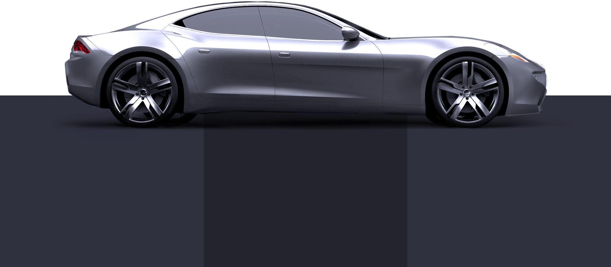

VIDEOS
GALLERY
CHARGING
TEST DRIVE
ORDER
Tesla Model S
The Tesla Model S is a full-sized electric five-door, luxury
liftback, produced by Tesla Mototrs. Since its introcution in
June 2012 it has achieved rapidly growing sales, particularly in
Norway and California.
TEST DRIVE

5+2
3,2sec
375mi
AVAILABLE SEATS
0 - 60 MAX ACCELERATION
RANGE AT 65 MPH